指南分为三个部分：
系统动力学是用来理解事务是如何相关的一种模型。它与我们在 NetLogo 里经常使用的 基于主体的方法有所区别。
在NetLogo里我们常用基于主体的方法,对单个主体的行为进行编程,观察它们的相互 作用涌现出的现象。例如在狼吃羊模型里,确定狼、羊、草之间的交互规则,当模型运行时, 观察涌现出的总体层次上的行为:例如狼和羊的数量如何随时间变化。
使用系统动力学建模工具时不是对个体行为编程,而是对一群主体的整体行为进行编 程。例如在建立狼吃羊的系统动力学模型时,你指定羊群的数量如何随狼群的数量变化而变 化,反之亦然,然后运行模型,观察两类群体的数量如何随时间变化。
使用系统动力学建模工具画出流图(diagram),定义这些总体数量或存量("stocks") 如何相互影响。建模工具读取这些图,生成合适的 NetLogo 代码 – 全局变量、例程和报告 器 – 在 NetLogo 里运行你的系统动力学模型。
系统动力学流图由四类元素构成:存量(Stock)、变量(Variable)、流量(Flow) 和连接(Link)。
存量是物品的集合,是一个积聚。例如存量可以表示羊群数量、湖中的水或工厂里零件 数量等。
流 将物品送入或流出存量。流看起来像一个带阀门的管道,阀门控制多少物品流过管道。
变量 是在流图中使用的数值,可以是依赖于其他变量的方程,也可以是个常数。
连接使图中某部分的值在其他部分可用,连接把来自变量或存量的数值传送到一个存量 或流。
通过不断估计,系统动力学建模工具计算出存量如何随时间变化。估计并不是总准确, 但可以通过改变 dt 值影响精度。随着 dt 减小,估计次数增加,精度增加。然而减小 dt 会 使模型运行变慢。
在 NetLogo 模型库的 Sample Models 部分有四个系统动力学模型,这四个模型都是研究 种群数量增长的(在捕食模型里,数量减少)。
Exponential Growth 和Logistic Growth 是只有一个存量的增长例子。
Wolf Sheep Predation (aggregate) 是有多个存量,存量相互影响的例子。这是一个 使用系统动力学建立的捕食-食饵生态系统模型。
Wolf Sheep Predation (docked) 是一个同时运行系统动力学模型和基于主体的模型 的例子。它运行狼吃羊系统动力学模型以及基于主体的狼吃羊模型,它位于 Sample Models 的 Biology 部分。
在 Tools 菜单选择 System Dynamics Modeler 菜单项,打开系统动力学建模工具,出现 建模窗口。
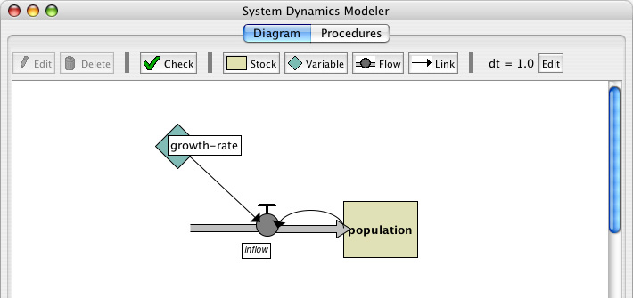
在流图页绘制系统动力学流图。
工具条上有编辑、删除、创建流图元素的按钮。
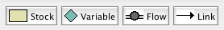
系统动力学流图有四类部件:存量、变量、流和连接。
要创建存量,在工具条上按下 Stock 按钮,在下面的绘图区单击,就出现新的存量。每个存量要有唯一名,作为全局变量。存量还需要指定 Initial value(初始值), 初始值可以是数值、变量、复杂的 NetLogo 表达式、或是对 NetLogo 报告器的调用。
要创建变量,在工具条上按下 Variable 按钮,在下面的绘图区单击。每个变量要有 唯一名,它作为例程名或全局变量名。变量还需要一个 Expression(表达式),可 以是数值、变量、复杂的 NetLogo 表达式、或是对 NetLogo 报告器的调用。
要创建流,在工具条上按下 Flow 按钮,在你希望流开始的地方 — 存量或空白区 – 单击并保持,拖动鼠标到流结束之处 – 存量或空白区。每个流需要唯一名,它成 为 NetLogo 报告器。流需要一个表达式,表示从输入到输出的流率,流率可以是数 值、变量、复杂的 NetLogo 表达式、或是对 NetLogo 报告器的调用。如果值为负, 则流是反向的。
当多个流连到一个存量上时,要重点考虑它们之间的交互作用。NetLogo 不强迫指 定出自一个存量的流的顺序。NetLogo 也不确保存量的流出之和小于等于流入。这 些行为可以在创建流的表达式时显式实现。
例如,如果流定义为常数 10,你可以使用min原语min (list stock 10)确保不会取 出超过存量的值。如果需要流A在流B计算之前消耗存量,可以将流A连到流B,修改流 B减去流A取自存量的值:min (list (max (list 0 (stock - flow-a))) 10)。
要创建连接,在你希望连接开始的地方 — 变量、存量或流 – 单击并保持,拖动 鼠标到目的变量或流。
创建存量、变量、流之后,你会看到在这些流图元素上有一个红色问号。问号表示该元素还没有命名,红色表示存量不完全:缺少产生模型所需的一个或多个值。当流图要素设置完整后,名字变黑。
选择： 要选择一个元素,在上面单击。要选择多个元素,按着 shift 键。也可以拖动一 个选择框选择多个元素。
编辑： 要编辑一个元素,选定后按下工具条上的"Edit"按钮,或双击该元素。(能够编 辑存量、流和变量,但不能编辑连接)。
移动：要移动流图元素,选定后用鼠标拖动。
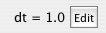
工具条右侧是默认 dt,它是系统动力学模型用来计算结果的时间间隔。要改变它的默 认值,按下 dt 附近的 Edit 按钮,输入新值。
当单击"check"按钮或编辑存量、流或变量后,建模工具将自动产生与流图对应的 NetLogo 代码,进行编译。如果有错,例程页变红,显示一条消息,有错的代码部分会高亮 显示。
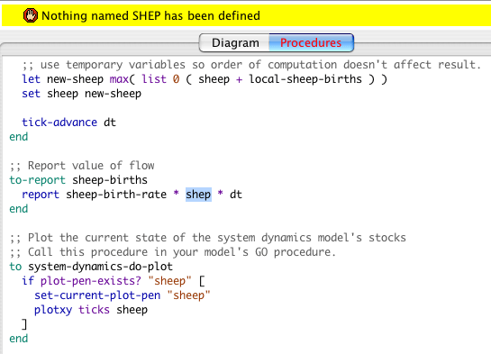
这让你更好了解模型的错误之处。
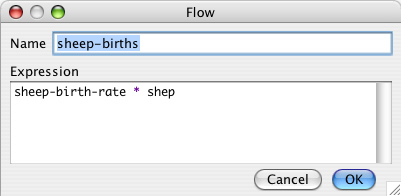
系统动力学建模工具根据你画的流图产生 NetLogo 变量和例程,正是这些例程实际执行计算功能。系统动力学建模工具的例程页显示根据流图产生的 NetLogo 例程。
你不能修改例程页的内容,要修改系统动力学模型,只能编辑流图。
让我们仔细看看所产生的代码与流图的关系:
存量对应一个全局变量,它根据 Initial value 域初始化为给定的值或表达式。每 个存量每个时间步根据进入和离开的流进行更新。
流对应一个例程,它包含 Expression 域给定的表达式。
变量可能是全局变量,也可能是一个例程。如果你提供的表达式是常数,则它就是 一个全局变量,并且初始化为该值。如果使用一个复杂表达式定义变量,则像流那 样创建一个例程。
在该页定义的变量和例程可以在 NetLogo 主窗口中访问,就像在 NetLogo 主窗口例程页 中定义的变量和例程一样。可以在主例程页、命令中心、界面页的按钮处调用这些例程。可 以在任何地方引用这些全局变量,包括主例程页和监视器。
有三个重要的例程需要注意:
system-dynamics-setup, system-dynamics-go，
and system-dynamics-do-plot。
system-dynamics-setup 初始化集计模型。它设置dt,调用reset-ticks,初始化 存量和转换器(converter),带有常数的转换器首先初始化,然后是带有常数的存量,其他 的存量按字母顺序初始化。
system-dynamics-go 行集计模型 dt时间。它计算流和变量值,更新存量值。 还调用以dt为参数的tick-advance。该例程调用时,由非常数表达式定义的转换器和流只计算一次,然而他们的计算顺序是不确定的。
system-dynamics-do-plot 绘制集计模型的存量值。要使用它,先要在NetLogo主 窗口创建一个绘图,然后为每个要绘制的存量定义一个画笔。该例程使用当前绘 图,可以使用set-current-plot命令改变当前绘图。
使用系统动力学建模工具绘制的流图以及根据流图产生的例程是 NetLogo 模型的一部 分。当保存模型时,流图也保存在同一个文件里。
我们使用系统动力学建模工具创建狼吃羊模型。
- 在 NetLogo 里打开一个新模型
- 在Tools 菜单启动系统动力学建模工具(System Dynamics Modeler)。
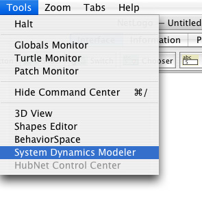
我们的模型包括狼群和羊群,从羊群开始建模。首先创建一个存量,保存羊的数量。
- 按下工具条中的 Stock 按钮。
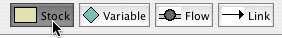
- 在绘图区单击。
你会看到一个存量,中间是红色问号。
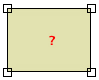
- 双击编辑该存量
- 将存量命名为
sheep- 设置初始值
100.- 令Allow Negative Values 复选框为未选，因为羊群为负不合理。
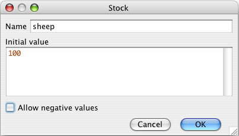
如果有羊出生,则羊的数量增加。要实现这一点,创建一个进入羊群存量的流量。
- 单击工具条上的 Flow 按钮,在 Sheep 存量左边的空白区按下鼠标按钮,向右拖动流 直到它的右侧连到 Sheep 存量。
- 编辑该流量,命名为
sheep-births。
一段时间内羊的出生数量依赖于活羊的数量:羊越多则生的越多。
- 从
sheep存量到sheep-births流量画一条连接。
羊的出生率还取决于某些常数因子,如繁殖率等,这超出本模型讨论的范围。
- 创建一个变量,命名为
sheep-birth-rate，设置它的值是0.04。- 从变量
sheep-birth-rate画一条连线到sheep-births。
流图应该像下面这样:
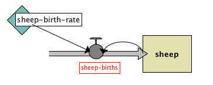
流量sheep-births 有一个红色标签,因为还没有给它指定表达式。红色表示 模型此处还缺少一些东西。
流入存量的羊数与羊群数量和羊的出生率成正比。
- 编辑流量
sheep-births，设置其表达式为sheep-birth-rate * sheep。
现在有了一个完整流图。单击系统动力学建模工具的例程页,查看由流图产生的代码。 看起来像这样:
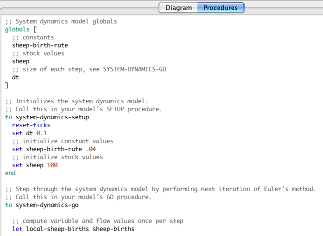
一旦使用系统动力学建模工具创建了集计模型,就可以在NetLogo主界面窗口中与模型 交互。现在构建NetLogo模型来运行由流图产生的代码。我们需要一个setup 和 go 按钮, 分别调用由系统动力学建模工具产生的system-dynamics-setup 和 system-dynamics-go
procedures例程。我们还需要一个监视器和一个绘图,用于查看羊群 数量的变化。
- 选择 NetLogo 主窗口
- 在例程页,写代码如下:
to setup ca system-dynamics-setup end to go system-dynamics-go system-dynamics-do-plot end- 转移到界面
- 创建
setup按钮- 创建
go按钮 (记住设为forever)- 创建
sheep监视。- 创建绘图"populations" ,提供画笔 "sheep"。
现在准备运行模型。
- 按下 setup 按钮。
- 现在不要按
go按钮,相反在命令中心里输入四五次go 。
注意发生的事情。羊的数量指数增加,经过四五次循环后,羊的数量很大。这是因为羊只有出生,没有死亡。
下面我们引入狼群,狼吃羊,来修正上面的模型。
- 返回系统动力学窗口
- 增加一个存量 wolves
- 增加流量、变量和连接,如下图所示：
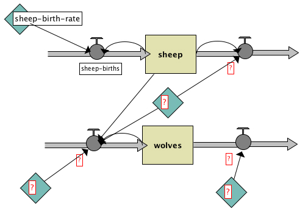
- 再增加一个连接,从存量
wolves连接到流出Sheep的流量- 为各个元素添上名字,如下图所 this:
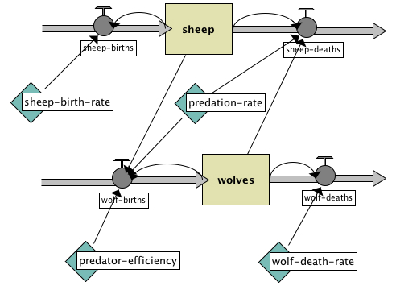
其中
wolves得初始值30，
wolf-deaths的表达式是wolves * wolf-death-rate,
wolf-death-rate是0.15,
predator-efficiency是.8,
wolf-birthsiswolves * predator-efficiency * predation-rate * sheep,
predation-rate是3.0E-4,
andsheep-deaths的表达式sheep * predation-rate * wolves.
现在真正完成了。
- 返回 NetLogo 主窗口
- 为羊群绘图增加一个名为 "wolves" 的画笔
- 按下
setup和go查看系统动力学建模效果
种群数量图形如下所示:
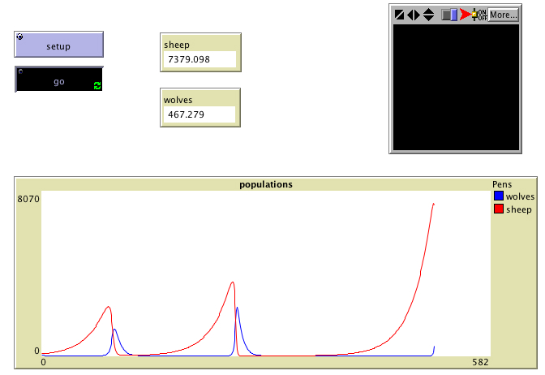